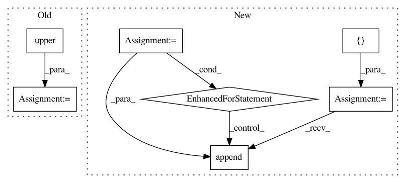

f25d9afd2572b98c56c3f597ad8da2648cd7b663,stanza/utils/training/common.py,,main,#Any#Any#Any#,21
Before Change
paths = default_paths.get_default_paths()
args = sys.argv[1:]
if args[0].startswith("--"):
mode = Mode[args[0][2:].upper()]
args = args[1:]
else:
mode = Mode.TRAIN
treebank = args[0]
After Change
def main(run_treebank, model_dir, model_name):
paths = default_paths.get_default_paths()
parser = build_argparse()
if "--extra_args" in sys.argv:
idx = sys.argv.index("--extra_args")
extra_args = sys.argv[idx+1:]
command_args = parser.parse_args(sys.argv[:idx])
else:
command_args, extra_args = parser.parse_known_args()
mode = command_args.mode
treebanks = []
for treebank in command_args.treebanks:
if treebank.lower() in ("ud_all", "all_ud"):
ud_treebank = common.get_ud_treebanks(paths["UDBASE"])
for t in ud_treebank:
short_name = treebank_to_short_name(t)
model_path = "saved_models/%s/%s_%s.pt" % (model_dir, short_name, model_name)
logger.debug("Looking for %s" % model_path)
if mode == Mode.TRAIN and os.path.exists(model_path):
logger.info("%s: %s exists, skipping!" % (t, model_path))
else:
treebanks.append(t)
else:
treebanks.append(treebank)
for treebank in treebanks:
short_name = treebank_to_short_name(treebank)
logger.debug("%s: %s" % (treebank, short_name))
run_treebank(mode, paths, treebank, short_name, command_args, extra_args)
In pattern: SUPERPATTERN
Frequency: 3
Non-data size: 7
Instances
Project Name: stanfordnlp/stanza
Commit Name: f25d9afd2572b98c56c3f597ad8da2648cd7b663
Time: 2020-12-01
Author: horatio@gmail.com
File Name: stanza/utils/training/common.py
Class Name:
Method Name: main
Project Name: home-assistant/home-assistant
Commit Name: db23320659a711637b5164fbe6ae6db15cc48e48
Time: 2016-07-06
Author: dale3h@gmail.com
File Name: homeassistant/components/sensor/apcupsd.py
Class Name:
Method Name: setup_platform
Project Name: geekcomputers/Python
Commit Name: c90c7f8e22c710729193604b55b144e2c04025c5
Time: 2017-01-18
Author: Pren0724@stthomas.edu
File Name: CountMillionCharacter.py
Class Name:
Method Name: